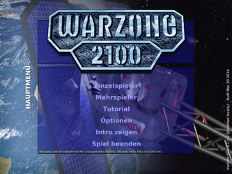
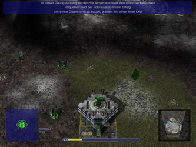
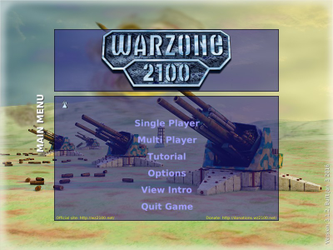
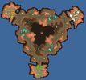
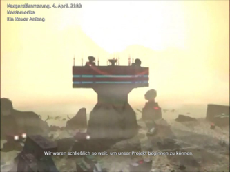
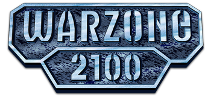

Warzone 2100
Dieser Artikel wurde für die folgenden Ubuntu-Versionen getestet:
Ubuntu 14.04 Trusty Tahr
Zum Verständnis dieses Artikels sind folgende Seiten hilfreich:
Warzone 2100  ist ein Echtzeit-Strategiespiele ähnlich Earth 2140, welches 1999 von den Pumpkin Studios entwickelt und von Eidos Interactive vertrieben wurde.
ist ein Echtzeit-Strategiespiele ähnlich Earth 2140, welches 1999 von den Pumpkin Studios entwickelt und von Eidos Interactive vertrieben wurde.
WZ 2100 spielt fünfzehn Jahre nach dem Kollaps, einem nuklearen Inferno, das im Jahre 2085 angeblich durch einen Fehler in einem Abwehrsystem für Nuklearangriffe der NASDA (North American Strategic Defence Agency) ausgelöst wurde. Eine Gruppe Überlebender hat Zuflucht in einer verlassenen Militärbasis in den Rocky Mountains gefunden. Diese Gruppe bezeichnet sich als Projekt und macht sich im Jahre 2100 auf, Technologien aus der Zeit vor dem Kollaps zu suchen. Aber sie sind nicht die einzigen die nach den Artefakten suchen. Andere haben bereits damit begonnen ihre Gebiete abzustecken und gnadenlos zu verteidigen...
Im Vergleich zu anderen Echtzeit-Strategiespiele ist besonders, dass der Spieler selbst Einheiten aus Rumpf, Antrieb und Waffen zusammenstellen muss, da es kaum Vorgabeeinheiten gibt. Während des Spieles können neue Technologien erforscht werden. Jede Entwicklung führt zu neuen Gebäudekomplexen und Ausrüstungsteilen (Rümpfe, Antriebe und Waffen) für die Fahrzeugflotte. Eine realistische Artillerie eröffnet dem Spieler weitere taktische Optionen... Warzone 2100 enthält eine frei dreh- und zoombare 3D-Umgebung.
Seit Dezember 2004 steht es als Open-Source-Spiel zur Verfügung. Es bildete eine erste Entwicklergruppe die jedoch bereits Mitte 2005 nicht mehr tätig war. Ende 2005 bildete sich das Warzone 2100 Resurrection Project , welches bis heute tätig ist. Das Projekt ließ das eigentliche Spiel zunächst weitgehend unverändert. Vielmehr wurde dafür gesorgt das der Code des Spiels leicht zu warten und somit leichter zu portieren ist. Hierzu zählte unter anderem die Umstellung auf Open-Source-Bibliotheken und Formate (z.B Vorbis anstelle von MP3 usw.). Die Arbeiten wurden Ende 2007 weitgehend abgeschlossen.
Zur Installation werden die Original-Datenträger nicht benötigt.
|  |  |
| Menü | Tutorial |
Installation¶
Paketquellen¶
Warzone2100 kann direkt aus den Quellen installiert werden [1]:
warzone2100 (universe)
warzone2100-music (universe, Musikdateien)
 mit apturl
mit apturl
Paketliste zum Kopieren:
sudo apt-get install warzone2100 warzone2100-music
sudo aptitude install warzone2100 warzone2100-music
Das Programm kann dann sofort gestartet werden [2].
Playdeb¶
Über die Paketquelle von PlayDeb: kann das Spiel ebenfalls installiert [1] [11] werden:
warzone2100 (PlayDeb)
mit apturl
Paketliste zum Kopieren:
sudo apt-get install warzone2100
sudo aptitude install warzone2100
Hinweis!
Fremdpakete können das System gefährden.
Desura¶
Das Spiel kann über die Internetseite oder den Client zur Spieleliste hinzugefügt und gestartet werden [9].
Kompilieren¶
Vorbereitung¶
Es müssen zuerst folgende Abhängigkeiten installiert werden:
build-essential
automake
flex
bison
libpng12-dev
libsdl1.2-dev
libopenal-dev
libphysfs-dev
libvorbis-dev
libtheora-dev
libglc-dev
libglew1.5-dev
libxrandr-dev
zip
unzip
libqt5opengl5-dev
libqt5network5
libqjson-dev
libssl-dev
qtscript5-dev
qt5-default
fakeroot
dpkg-dev
mit apturl
Paketliste zum Kopieren:
sudo apt-get install build-essential automake flex bison libpng12-dev libsdl1.2-dev libopenal-dev libphysfs-dev libvorbis-dev libtheora-dev libglc-dev libglew1.5-dev libxrandr-dev zip unzip libqt5opengl5-dev libqt5network5 libqjson-dev libssl-dev qtscript5-dev qt5-default fakeroot dpkg-dev
sudo aptitude install build-essential automake flex bison libpng12-dev libsdl1.2-dev libopenal-dev libphysfs-dev libvorbis-dev libtheora-dev libglc-dev libglew1.5-dev libxrandr-dev zip unzip libqt5opengl5-dev libqt5network5 libqjson-dev libssl-dev qtscript5-dev qt5-default fakeroot dpkg-dev
Hat man die deb-src Quellen für universe aktiviert können die Bauabhängigkeiten alternativ mit folgendem Befehl installiert [4] [7] werden:
sudo apt-get build-dep warzone2100
|  |
| Kompilieren |
Durchführung¶
Debian-Paket¶
Zur Erstellung eines .deb-Paketes lädt man sich zuerst von sourceforge den aktuellen Quellcode herunter. Das Archiv (warzone2100*.tar.gz) im nächsten Schritt entpacken [3] und anschließend die Paketerstellung in dem Verzeichnis des entpackten Archives im Terminal [4] [8] initiieren.
./autogen.sh && ln -s pkg/dpkg debian && dpkg-buildpackage -uc -b
Die im nächsthöheren Verzeichnis erstellten Pakete warzone2100*.deb, warzone2100-data*.deb und warzone2100-music*.deb installieren [5].
Quellcode¶
Alternativ kann man mit nachstehenden Befehlen Warzone im Quellcode kompilieren [4] [8], so dass auch mehrere Versionen nebeneinander benutzt werden können.
./autogen.sh && ./configure && make
Hinweis:
Bei der Verwendung eines Quadcores hinter den Befehl von make die Option -j4 setzen oder -h 2 bei Dualcores.
Starten lässt es sich nun direkt im Quellcodeverzeichnis [4] mit:
./src/warzone2100
Nun ist es möglich einen Starter zu erstellen [6]. Das Icon liegt unter icons/warzone2100.png. In der Desktopdatei warzone2100.desktop muss noch der Pfad zum Quellcode an zwei Stellen angepasst [10] werden.
[Desktop Entry] Version=1.0 Type=Application Name=Warzone 2100 Name[de]=Warzone 2100 GenericName=Strategy Game GenericName[de]=Strategiespiel Comment=Postnuclear realtime strategy Comment[de]=Postnukleare Echtzeitstrategie Icon=/PFAD/ZU/QUELLCODE/icons/warzone2100.png TryExec=warzone2100 Exec=/PFAD/ZU/QUELLCODE/src/warzone2100 Categories=Game;StrategyGame; Name[pt_BR] = Warzone 2100 GenericName[pt_BR] = Jogo de Estratégia Comment[pt_BR] = Estratégia Realtime Pós-Nuclear Name[ko] = 워존 Name[it] = Warzone 2100 Name[es] = Warzone 2100 Name[tr] = Warzone 2100 GenericName[it] = Gioco di Strategia GenericName[es] = Juego de Estrategia GenericName[tr] = Strateji Oyunu Comment[it] = Strategia in tempo reale postnucleare Comment[es] = Estrategia a tiempo real postnuclear Comment[tr] = Nükleer sonrası gerçek zamanlı strateji Name[pl] = Warzone 2100 GenericName[pl] = Gra strategiczna Comment[pl] = Post nuklearna strategia czasu rzeczywistego Name[hu] = Warzone 2100 GenericName[hu] = Stratégiai játék Comment[hu] = Nukleáris háború utáni valósidejű stratégiai játék Name[ru] = Warzone 2100 GenericName[ru] = Стратегия Comment[ru] = Постядерная стратегия в реальном времени Name[fr] = Warzone 2100 GenericName[fr] = Jeu de stratégie Comment[fr] = Jeu de stratégie en temps réel dans un contexte post-nucléaire. Name[nl] = Warzone 2100 Name[ca_ES] = Warzone 2100 GenericName[nl] = Strategie Spel GenericName[ca_ES] = Partida d'estratègia Comment[nl] = Nucleaire naoorlogse strategie Comment[ca_ES] = Estratègia en temps real postnuclear Name[el] = Ζώνη Πολέμου 2100 Name[pt] = Warzone 2100 GenericName[el] = Παιχνίδι Στρατηγικής GenericName[pt] = Jogo de Estratégia Comment[el] = Παιχνίδι στρατηγικής πραγματικού χρόνου, στη μεταπυρηνική εποχή Comment[pt] = Estratégia em tempo real em ambiente pós-nuclear. Comment[zh_CN] = 核心实时策略
Auf Wunsch kann auch ein symlink gesetzt werden.
Menü¶
Beim Spielstart erscheint das folgende Menü:
| Menü | |
| Menüpunkt | Beschreibung |
| "Einzelspieler" | Kampagne im Einzelspielermodus bestreiten. |
| "Mehrspieler" | Eine Multiplayersitzung eröffnen oder dieser beitreten. |
| "Tutorial" | Einführung in die wichtigsten Grundfunktionen des Spiels. |
| "Optionen" | Sprach-, Grafik-, Video- und Audioeinstellungen vornehmen. Anpassung der Maus und der Tasten. |
| "Intro zeigen" | Videosequenz anzeigen. |
| "Spiel beenden" | Das Spiel beenden. |
Spielmodi¶
Dem Spieler stehen unterschiedliche Modi zur Verfügung:
| Spielmodi | |
| Modus | Beschreibung |
| Einzelspieler | Im Einzelspieler Modus kämpft man allein oder im Team gegen ein oder mehrere Bots. |
| Kampagne | In dem Kampagne Modus spielt man gegen mehrere Bots, gegen die man meist nacheinander kämpfen muss. Sie dient gleichzeitig als eine praktische Erklärung, um die Grundlagen des Spieles zu erlernen. |
| Mehrspieler Modus | Im Mehrspieler Modus kämpft man gegen reale andere Menschen über das Internet, oft auch in Teams. |
|  |
| Karte |
Erweiterungen¶
Auf der Projektseite stehen eine Vielzahl von Erweiterungen zur Verfügung, welche sich in unterschiedliche Kategorien unterteilen. Die gewünschte Karte, Bots oder sonstige Modifikationen herunterladen und in die entsprechenden Ordner kopieren. Sie stehen anschließend sofort zur Verfügung.
Auf der Seite von warzone2100.de  stehen Daten für ältere Versionen des Spiels zur Verfügung. Die Zugangsdaten sind im Forum zu ersehen.
stehen Daten für ältere Versionen des Spiels zur Verfügung. Die Zugangsdaten sind im Forum zu ersehen.
Hinweis:
Karten und Mods müssen im .wz-Format vorliegen. Das ältere .wdg-Format ist nicht kompatibel mit der aktuellen Version des Spiels.
|  |
| Intro |
Videosequenzen¶
Kampagnenvideos können in unterschiedlichen Qualitätsstufen von sourceforge heruntergeladen werden. Alle Videos wurden aus dem Ursprungsmaterial, welches eine Auflösung von 320x160 Pixel hatte, durch Skalierung und den Einsatz von Filtertechniken erstellt. Die Standardqualität ist vollkommen ausreichend.
| Kampagnenvideos | |
| Qualität | Beschreibung |
| "low-quality-en" | Geringe Videoqualität in englischer Sprache mit deutschen Untertiteln (ca. 170 MB). |
| "standard-quality-en" | Standardqualität in Englisch (ca. 572 MB). |
| "standard-quality-de" | Standardqualität auf Deutsch (ca. 499 MB). Dies sind die Videosequenzen und Audiodaten der deutschen Version des Original-Warzone-2100. |
| "high-quality-en" | Hohe Qualität der Videosequenzen in Englisch (ca. 964 MB). |
Die Datei sequences.wz nach dem Herunterladen in den entsprechenden Ordner kopieren.
Verzeichnisse¶
Die Ordnerstruktur gliedert sich wie folgt:
| Verzeichnisse | ||
| Art | Verzeichnis | Beschreibung |
| Basisverzeichnis | ~/.warzone2100-VERSION | Die Datei mit den Videosequenzen (sequences.wz) wird direkt im Basisverzeichnis gespeichert. |
| Bildschirmfotos | ~/.warzone2100-VERSION/screenshots | In diesem Ordner werden Screenshots, in den Formaten .png und .jpg, abgelegt. |
| Karten | ~/.warzone2100-VERSION/maps | Speicherort für zusätzliche Karten. |
| Modifikationen | ~/.warzone2100-VERSION/mods | Modifikationen (z.B. Bots) werden hier gespeichert. |
| Musik | ~/.warzone2100-VERSION/music | In diesem Ordner können Musiktitel abgelegt werden.. |
Musik¶
In den Musikordner die gewünschten Stücke als .ogg-Dateien abspeichern.
In einem Editor [10] die Datei music.wpl nach dem folgenden Schema erstellen und zusammen mit den gewählten Musikstücken in den Ordner kopieren:
menu.ogg track1.ogg track2.ogg track3.ogg track4.ogg
menu.ogg wird im Hauptmenü sowie beim Ladebildschirm abgespielt.
Hinweis:
Auf der Seite von atlassian.net  findet man neben den Original-Stücken von Martin Severn auch weitere passende Songs.
findet man neben den Original-Stücken von Martin Severn auch weitere passende Songs.
Handbuch¶
Ein Handbuch des Originalspiels kann in deutscher Sprache von free.fr heruntergeladen werden. Die Tastenkürzel in diesem sind veraltet.
Tips und Tricks¶
Config¶
Die Konfigurationsdatei config, aus dem versteckten Verzeichnis ~/.warzone2100-VERSION/, kann mit einem Editor [10] bearbeitet werden. Änderungen an der Datei werden erst nach einem Neustart des Spiels wirksam.
[General] voicevol=100 fxvol=100 cdvol=50 music_enabled=true width=1920 height=1200 bpp=32 fullscreen=true language=de difficulty=1 showFPS=0 scroll=1000 shake=1 mouseflip=1 nomousewarp=0 RightClickOrders=0 MiddleClickRotate=0 shadows=1 sound=1 FMVmode=0 scanlines=0 subtitles=1 radarObjectMode=0 radarTerrainMode=0 trapCursor=false vsync=true shaders=2 textureSize=2048 FSAA=0 UPnP=1 rotateRadar=true PauseOnFocusLoss=false masterserver_name=lobby.wz2100.net masterserver_port=9990 gameserver_port=2100 colour=0 colourMP=-1
| config | |
| Eintrag | Beschreibung |
trapCursor=false | Mauszeiger im Spielfenster fangen true - freilassen mit false |
radarObjectMode=0 | Freund-Feind-Farben an 1 / aus 0 |
masterserver_name=lobby.wz2100.net | Ein eröffnetes Spiel wird automatisch auf dem Lobbyserver gelistet. Falls dies nicht gewünscht wird den Eintrag entsprechend ungültig abändern z.B. masterserver_name=ubuntuusers |
Spielstand aus Windows¶
Spielstände aus Windows, welche unter C:\Users\<username>\Documents\Warzone 2100-VERSION\savegames zu finden sind, können unter Linux weitergenutzt werden. Hierzu die absolvierten Kampanienspielstände aus Windows in das Verzeichnis ~/.warzone2100-VERSION/savegames/campaign.
Tastenkürzel¶
| Tastenkürzel | |||
| Taste(n) | Beschreibung | Taste(n) | Beschreibung |
| F1 | Produktionsmenü | Esc | Pause / Optionsmenü |
| F2 | Forschungsmenü |  | Einheit/Aktion wählen |
| F3 | Konstruktionsmenü |
⇧ + | Mehrere Einheiten wählen |
| F4 | Entwurfsmenü |  (Mausrad) (Mausrad) | Blickwinkel ändern - unterstützt durch Bewegung der Maus. |
| F5 | Aufklärungsmenü | Tab ⇆ | Anzeigen ein/ausblenden |
| F6 | Commander |  | Karte scrollen. |
| F10 | Bildschirmfoto erstellen. | ⌫ | Blickwinkel nach Norden ausrichten |
| Verfolgerkamera (de)aktivieren | B | Hauptquartier | |
Eine komplette Übersicht ist unter wz2100.net oder wz2100.net zu finden.

Infobox¶
| Warzone 2100 GPL | |
| Originaltitel: | Warzone 2100 |
| Genre: | Echtzeit-Strategiespiele |
| Sprache: | |
| Veröffentlichung: | 1999 / 2004+ (OpenSource) |
| Publisher: | Eidos Interactive |
| Systemvoraussetzungen: | 1 GHz Prozessor, 128 MB RAM, OpenGL, 100 MB Speicherplatz |
| Medien: | CD (1) / Download |
| Strichcode / EAN / GTIN: | 5032921005562 |
| Läuft mit: | nativ |

- Erstellt mit Inyoka
-
 2004 – 2017 ubuntuusers.de • Einige Rechte vorbehalten
2004 – 2017 ubuntuusers.de • Einige Rechte vorbehalten
Lizenz • Kontakt • Datenschutz • Impressum • Serverstatus -
Serverhousing gespendet von